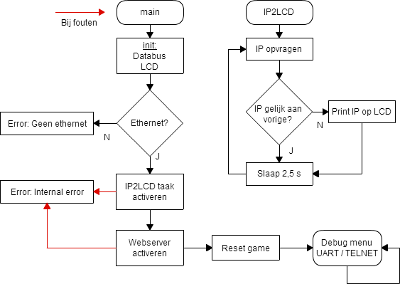
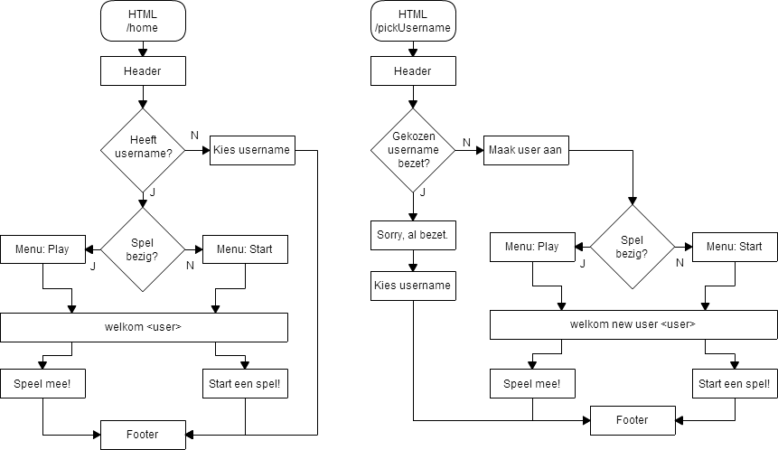
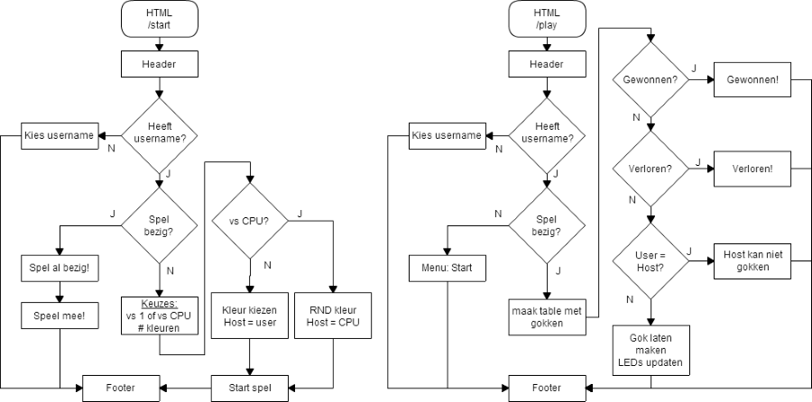
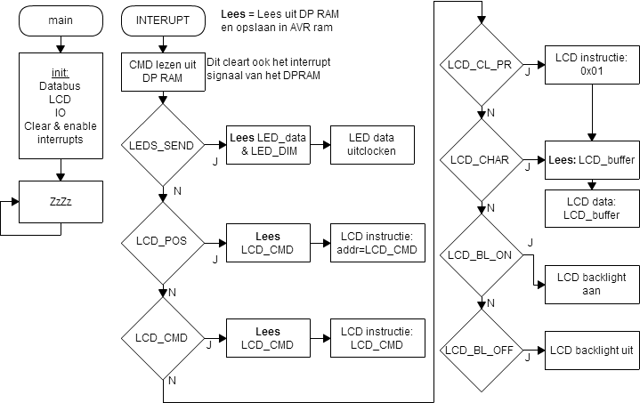

De Software
Bijna alle software voor dit project is geschreven in C. De uitzondering hierop is de driver voor de WS2812 LEDs. Die is, omdat ze zeer timing kritiek is, in inline assembly geschreven.
Software op SC12
De SC12 draait op een real time besturingssyteem dat sterk lijkt op DOS. Het vinden van de documentatie en een compiler die draait op 64 bit windows was moeilijk. De eerste optie was het gebruiken van een virtual machine, maaar dit is helemaal niet handig in gebruik. Ook zat ik dan vast met een verouderde IDE. Na wat verder zoeken bleek dat de linux versie van OpenWacom zonder problemen 80168 code kan compilen. Aangezien ik een servertje op Ubuntu heb draaien was dit geen probleem. Hierdoor kon ik Eclipse gebruiken als IDE.
De eigelijke code is hier beschikbaar.
De flowchart
Ik heb de flowchart opgedeeld in verschillende delen om de leesbaarheid te verhogen.


SC12 Flowchart
Software op AVR
De AVR Atmega128 doet eigenlijk niet veel. Enkel als de SC12 een commando stuurt (via een speciaal adress in het DP RAM) word de AVR via een interrupt wakker gemaakt.
De eigelijke code is hier beschikbaar.
De flowchart
AVR Flowchart